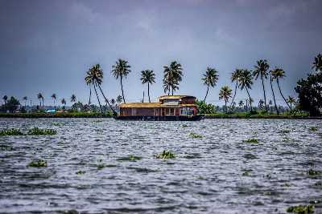

Alappuzha (or Alleppey) is a city on the Laccadive Sea in the southern Indian state of Kerala.
It's best known for houseboat cruises along the rustic Kerala backwaters, a network of tranquil canals
and lagoons.
Alappuzha Beach is the site of the 19th-century Alappuzha Lighthouse.
Houseboats

The houseboat will always be manned by at least 3 people- a cook, a guide and an oarsman. Delicious meals are provided on the houseboats by the in-house cook which are a local favourite. The guide keeps you posted of all the important landmarks you pass and the oarsman makes sure you have a wonderful time cruising along the calm backwaters.
Vembanad lake

Vembanad Lake is a lagoon located in the district of Alleppey in the South-Indian state of Kerala. This expansive lake/ lagoon is longest lake in the country and the largest Lake in Kerala, accessible from Kottayam, Kuttanad and Kochi
Backwaters of Allapuzha

Alleppey is rightfully called the Venice of the East. With its labyrinth of brackish lagoons and interconnected lakes, Alleppey or Alappuzha is no less than the famous European city - neither in beauty nor in history and culture. Alleppey is the heaven for the nature lovers with the soul-soothing greenery and the backwaters.